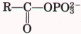
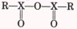

- absolute configuration:
- The configuration of four different substituent groups around an asymmetric carbon atom, in relation to D- and L-glyceraldehyde. absolute configuration The configuration of four different substituent groups around an asymmetric carbon atom, in relation to D- and L-glyceraldehyde.
- absolute configuration:
- The configuration of four different substituent groups around an asymmetric carbon atom, in relation to D- and L-glyceraldehyde.
- absorption:
- Transport of the products of digestion from the intestinal tract into the blood.
- acceptor control:
- The regulation of the rate of respiration by the availability of ADP as phosphate group acceptor.
- accessory pigments:
- Visible lightabsorbing pigments (carotenoids, xanthophyll, and phycobilins) in plants and photosynthetic bacteria that complement chlorophylls in trapping energy from sunlight.
- acidosis:
- A metabolic condition in which the capacity of the body to buffer H+ is diminished; usually accompanied by decreased blood pH.
- actin:
- A protein making up the thin filaments of muscle; also an important component. of the cytoskeleton of many eukaryotic cells.
- activation energy (ΔG°'):
- The amount of energy (in joules) required to convert all the molecules in 1 mole of a reacting substance from the ground state to the transition state.
- activator:
- (1) A DNA-binding protein that positively regulates the expression of one or more genes; that is, transcription rates increase when an activator is bound to the DNA. (2) A positive modulator of an allosteric enzyme.
- active site:
- The region of an enzyme surface that binds the substrate molecule and catalytically transforms it; also known as the catalytic site.
- active transport:
- Energy-requiring transport of a solute across a membrane in the direction of increasing concentration.
- activity:
- The true thermodynamic activity or potential of a substance, as distinct from its molar concentration.
- activity coefficient:
- The factor by which the numerical value of the concentration of a solute must be multiplied to give its true thermodynamic activity.
- acyl phosphate:
- Any molecule with the general chemical form

.
- adenosine 3',5'-cyclic monophosphate:
- See cyclic AMP.
- adenosine diphosphate:
- See ADP.
- adenosine triphosphate:
- See ATP.
- adipocyte:
- An animal cell specialized for the storage of fats (triacylglycerols).
- adipose tissue:
- Connective tissue specialized for the storage of large amounts of triacylglycerols.
- ADP (adenosine diphosphate):
- A ribonucleoside 5'-diphosphate serving as phosphate group acceptor in the cell energy cycle.
- aerobe:
- An organism that lives in air and uses oxygen as the terminal electron acceptor in respiration.
- aerobic:
- Requiring or occurring in the presence of oxygen.
- alcohol fermentation:
- The anaerobic conversion of glucose to ethanol via glycolysis. See also fermentation.
- aldose:
- A simple sugar in which the carbonyl carbon atom is an aldehyde; that is, the carbonyl carbon is at one end of the carbon chain.
- alkaloids:
- Nitrogen-containing organic compounds of plant origin; often basic, and having intense biological activity.
- alkalosis:
- A metabolic condition in which the capacity of the body to buffer OH- is diminished; usually accompanied by an increase in blood pH.
- allosteric enzyme:
- A regulatory enzyme, with catalytic activity modulated by the noncovalent binding of a specific metabolite at a site other than the active site.
- allosteric site:
- The specific site on the surface of an allosteric enzyme molecule to which the modulator or effector molecule is bound.
- α helix:
- A helical conformation of a polypeptide chain, usually right-handed, with maximal intrachain hydrogen bonding; one of the most common secondary structures in proteins.
- Ames test:
- A simple bacterial test for carcinogens, based on the assumption that carcinogens are mutagens.
- amino acid activation:
- ATP-dependent enzymatic esterification of the carboxyl group of an amino acid to the 3'-hydroxyl group of its corresponding tRNA.
- amino acids:
- α-Amino-substituted carboxylic acids, the building blocks of proteins.
- amino-terminal residue:
- The only amino acid residue in a polypeptide chain with a free a-amino group; defmes the amino terminus of the polypeptide.
- aminoacyl-tRNA:
- An aminoacyl ester of a tRNA.
- aminoacyl-tRNA synthetases:
- Enzymes that catalyze synthesis of an aminoacyltRNA at the expense of ATP energy.
- aminotransferases:
- Enzymes that catalyze the transfer of amino groups from α-amino to α-keto acids; also called transaminases.
- ammonotelic:
- Excreting excess nitrogen in the form of ammonia.
- amphibolic pathway:
- A metabolic pathway used in both catabolism and anabolism.
- amphipathic:
- Containing both polar and nonpolar domains.
- amphoteric:
- Capable of donating and accepting protons, thus able to serve as an acid or a base.
- anabolism:
- The phase of intermediary metabolism concerned with the energyrequiring biosynthesis of cell components from smaller precursors.
- anaerobe:
- An organism that lives without oxygen. Obligate anaerobes die when exposed to oxygen.
- anaerobic:
- Occurring in the absence of air or oxygen.
- anaplerotic reaction:
- An enzyme-catalyzed reaction that can replenish the supply of intermediates in the citric acid cycle.
- angstrom (Å):
- A unit of length (10-8 cm) used to indicate molecular dimensions.
- anhydride:
- The product of the condensation of two carboxyl or phosphate groups in which the elements of water are eliminated to form a compound with the general structure

, where X is either carbon or phosphorus.
- anion-exchange resin:
- A polymeric resin with fixed cationic groups; used in the chromatographic separation of anions.
- anomers:
- Two stereoisomers of a given sugar that differ only in the configuration about the carbonyl (anomeric) carbon atom.
- antibiotic:
- One of many different organic compounds that are formed and secreted by various species of microorganisms and plants, are toxic to other species, and presumably have a defensive function.
- antibody:
- A defense protein synthesized by the immune system of vertebrates. See also immunoglobulin.
- anticodon:
- A specific sequence of three nucleotides in a tRNA, complementary to a codon for an amino acid in an mRNA.
- antigen:
- A molecule capable of eliciting the synthesis of a specific antibody in vertebrates.
- antiparallel:
- Describing two linear polymers that are opposite in polarity or orientation.
- antiport:
- Cotransport of two solutes across a membrane in opposite directions.
- apoenzyme:
- The protein portion of an enzyme, exclusive of any organic or inorganic cofactors or prosthetic groups that might be required for catalytic activity.
- apolipoprotein:
- The protein component of a lipoprotein.
- asymmetric carbon atom:
- A carbon atom that is covalently bonded to four dif ferent groups and thus may exist in two different tetrahedral configurations.
- ATP (adenosine triphosphate):
- A ribonucleoside 5'-triphosphate functioning as a phosphate group donor in the cell energy cycle; carries chemical energy between metabolic pathways by serving as a shared intermediate coupling endergonic and exergonic reactions.
- ATP synthase:
- An enzyme complex that forms ATP from ADP and phosphate during oxidative phosphorylation in the inner mitochondrial membrane or the bacterial plasma membrane, and during photophosphorylation in chloroplasts.
- ATPase:
- An enzyme that hydrolyzes ATP to yield ADP and phosphate; usually coupled to some process requiring energy.
- attenuator:
- An RNA sequence involved in regulating the expression of certain genes; functions as a transcription terminator.
- autotroph:
- An organism that can synthesize its own complex molecules from very simple carbon and nitrogen sources, such as carbon dioxide and ammonia.
- auxin:
- A plant growth hormone.
- auxotrophic mutant (auxotroph):
- A mutant organism defective in the synthesis of a given biomolecule, which must therefore be supplied for the organism's growth.
- Avogadro's number (N):
- The number of molecules in a gram molecular weight (a mole) of any compound (6.02 × 1023).
- back-mutation:
- A mutation that causes a mutant gene to regain its wild-type base sequence.
- bacteriophage (phage):
- A virus capable of replicating in a bacterial cell.
- basal metabolic rate:
- The rate of oxygen consumption by an animal's body at complete rest, long after a meal.
- base pair:
- Tvvo nucleotides in nucleic acid chains that are paired by hydrogen bond. ing of their bases; for example, A with T or U, and G with C.
- β conformation:
- An extended, zigzag arrangement of a polypeptide chain; a common secondary structure in proteins.
- β oxidation:
- Oxidative degradation of fatty acids into acetyl-CoA by successive oxidations at the β-carbon atom.
- bilayer:
- A double layer of oriented amphipathic lipid molecules, forming the basic structure of biological membranes. The hydrocarbon tails face inward to form a continuous nonpolar phase.
- bile salts:
- Amphipathic steroid derivatives with detergent properties, participating in digestion and absorption of lipids.
- binding energy:
- The energy derived from noncovalent interactions between enzyme and substrate or receptor and ligand.
- biocytin:
- The conjugate amino acid residue arising from covalent attachment of biotin, through an amide linkage, to a Lys residue.
- biomolecule:
- An organic compound normally present as an essential component of living organisms.
- biopterin:
- An enzymatic cofactor derived from pterin and involved in certain oxidation-reduction reactions.
- biosphere:
- All the living matter on or in the earth, the seas, and the atmosphere.
- biotin:
- A vitamin; an enzymatic cofactor involved in carboxylation reactions.
- bond energy:
- The energy required to break a bond.
- branch migration:
- Movement of the branch point in branched DNA formed from two DNA molecules with identical sequences. See also Holliday intermediate.
- buffer:
- A system capable of resisting changes in pH, consisting of a conjugate acid-base pair in which the ratio of proton acceptor to proton donor is near unity.
- calorie:
- The amount of heat required to raise the temperature of 1.0 g of water from 14.5 to 15.5 °. One calorie (cal) equals 4.18 joules (J).
- Calvin cycle:
- The cyclic pathway used by plants to fix carbon dioxide and produce triose phosphates.
- cAMP:
- See cyclic AMP.
- CAP:
- See catabolite gene activator protein.
- capsid:
- The protein coat of a virion or virus particle.
- carbanion:
- A negatively charged carbon atom.
- carbocation:
- A positively charged carbon atom; also called a carbonium ion.
- carbon fixation reactions:
- In photosynthetic cells, the light-independent enzymatic reactions involved in the synthesis of glucose from CO2, ATP, and NADPH; also known as the dark reactions.
- carboxyl-terminal residue:
- The only amino acid residue in a polypeptide chain with a free α-carboxyl group; defines the carboxyl terminus of the polypeptide.
- carotenoids:
- Lipid-soluble photosynthetic pigments made up of isoprene units.
- catabolism:
- The phase of intermediary metabolism concerned with the energyyielding degradation of nutrient molecules.
- catabolite gene activator protein (CAP):
- A specific regulatory protein that controls initiation of transcription of the genes producing the enzymes required for a bacterial cell to use some other nutrient when glucose is lacking.
- catalytic site:
- See active site.
- catecholamines:
- Hormones, such as epinephrine, that are amino derivatives of catechol.
- cation-exchange resin:
- An insoluble polymer with fixed negative charges; used in the chromatographic separation of cationic substances.
- cDNA:
- See complementary DNA.
- central dogma:
- The organizing principle of molecular biology: genetic information flows from DNA to RNA to protein.
- centromere:
- A specialized site within a chromosome, serving as the attachment point for the mitotic or meiotic spindle.
- cerebroside:
- Sphingolipid containing one sugar residue as a head group.
- channeling:
- The direct transfer of a reaction product (common intermediate) from the active site of one enzyme to the active site of a different enzyme catalyzing the next step in a sequential pathway.
- chemiosmotic coupling:
- Coupling of ATP synthesis to electron transfer via an electrochemical H+ gradient across a membrane.
- chemotaxis:
- A cell's sensing of and movement toward, or away from, a specific chemical agent.
- chemotroph:
- An organism that obtains energy by metabolizing organic compounds derived from other organisms.
- chiral compound:
- A compound that contains an asymmetric center (chiral atom or chiral center) and thus can occur in two nonsuperimposable mirror-image forms (enantiomers).
- chlorophylls:
- A family of green pigments functioning as receptors of light energy in photosynthesis; magnesium-porphyrin complexes.
- chloroplasts:
- Chlorophyll-containing photosynthetic organelles in some eukaryotic cells.
- chromatin:
- A filamentous complex of DNA, histones, and other proteins, constituting the eukaryotic chromosome.
- chromatography:
- A process in which complex mixtures of molecules are separated by many repeated partitionings between a flowing (mobile) phase and a stationary phase.
- chromosome:
- A single large DNA molecule and its associated proteins, containing many genes; stores and transmits genetic information.
- chylomicron:
- A plasma lipoprotein consisting of a large droplet of triacylglycerols stabilized by a coat of protein and phospholipid; carries lipids from the intestine to the tissues.
- cis and trans isomers:
- See geometric isomers.
- cistron:
- A unit of DNA or RNA corresponding to one gene.
- citric acid cycle:
- A cyclic system of enzymatic reactions for the oxidation of acetyl residues to carbon dioxide, in which formation of citrate is the first step; also known as the Krebs cycle or tricarboxylic acid cycle.
- clones:
- The descendants of a single cell.
- cloning:
- The production of large numbers of identical DNA molecules or cells from a single ancestral DNA molecule or cell.
- closed system:
- A system that exchanges neither matter nor energy with the surroundings. See also system.
- cobalamin:
- See coenzyme B12.
- codon:
- A sequence of three adjacent nucleotides in a nucleic acid that codes for a specific amino acid.
- coenzyme:
- An organic cofactor required for the action of certain enzymes; often contains a vitamin as a component.
- coenzyme A:
- A pantothenic acidcontaining coenzyme serving as an acyl group carrier in certain enzymatic reactions.
- coenzyme B12:
- An enzymatic cofactor derived from the vitamin cobalamin, involved in certain types of carbon skeletal rearrangements.
- cofactor:
- An inorganic ion or a coenzyme required for enzyme activity.
- cognate:
- Describing two biomolecules that normally interact; for example, an enzyme and its normal substrate, or a receptor and its normal ligand.
- cohesive ends:
- See sticky ends.
- cointegrate:
- An intermediate in the migration of certain DNA transposons in which the donor DNA and target DNA are covalently attached.
- colligative properties:
- Properties of solutions that depend on the number of solute particles per unit volume; for example, freezing-point depression.
- common intermediate:
- A chemical compound common to two chemical reactions, as a product of one and a reactant in the other.
- competitive inhibition:
- A type of enzyme inhibition reversed by increasing the substrate concentration; a competitive inhibitor generally competes with the normal substrate or ligand for a protein's binding site.
- complementary:
- Having a molecular surface with chemical groups arranged to interact specifically with chemical groups on another molecule.
- complementary DNA (cDNA):
- A DNA used in DNA cloning, usually made by reverse transcriptase; complementary to a given mRNA.
- configuration:
- The spatial arrangement of an organic molecule that is conferred by the presence of either (1) double bonds, about which there is no freedom of rotation, or (2) chiral centers, around which substituent groups are arranged in a specific sequence. Configurational isomers cannot be interconverted without breaking one or more covalent bonds.
- conformation:
- The spatial arrangement of substituent groups that are free to assume different positions in space, without breaking any bonds, because of the freedom of bond rotation.
- conformation, β:
- See β conformation.
- conjugate acid-base pair:
- A proton donor and its corresponding deprotonated species; for example, acetic acid (donor) and acetate (acceptor).
- conjugate redox pair:
- An electron donor and its corresponding electron acceptor form; for example, Cu+ (donor) and Cu2+ (acceptor), or NADH (donor) and NAD+ (acceptor).
- conjugated protein:
- A protein containing one or more prosthetic groups.
- consensus sequence:
- A DNA or amino acid sequence consisting of the residues that occur most commonly at each position within a set of similar sequences.
- conservative substitution:
- Replacement of an amino acid residue in a polypeptide by another residue with similar properties; for example, substitution of Glu by Asp.
- constitutive enzymes:
- Enzymes required at all times by a cell and present at some constant level; for example, many enzymes of the central metabolic pathways. Sometimes called "housekeeping enzymes."
- corticosteroids:
- Steroid hormones formed by the adrenal cortex.
- cosmid:
- A cloning vector, used for cloning large DNA fragments; generally contains segments derived from bacteriophages and various plasmids.
- eotransport:
- The simultaneous transport, by a single transporter, of two solutes across a membrane. See antiport, symport.
- coupled reactions:
- Two chemical reactions that have a common intermediate and thus a means of energy transfer from one to the other.
- covalent bond:
- A chemical bond that involves sharing of electron pairs.
- cristae:
- Infoldings of the inner mitochondrial membrane.
- cyclic AMP icAMP):
- A second messenger within cells; its formation by adenylate cyclase is stimulated by certain hormones or other molecular signals.
- cyclic electron flow:
- In chloroplasts, the light-induced flow of electrons originating from and returning to photosystem I.
- cyclic photophosphorylation:
- ATP synthesis driven by cyclic electron flow through photosystem I.
- cytochromes:
- Heme proteins serving as electron carriers in respiration, photosynthesis, and other oxidation-reduction reactions.
- cytokinesis:
- The final separation of daughter cells following mitosis.
- cytoplasm:
- The portion of a cell's contents outside the nucleus but within the plasma membrane; includes organelles such as mitochondria.
- cytoskeleton:
- The filamentous network providing structure and organization to the cytoplasm; includes actin filaments, microtubules, and intermediate filaments.
- cytosol:
- The continuous aqueous phase of the cytoplasm, with its dissolved solutes; excludes the organelles such as mitochondria.
- dalton:
- The weight of a single hydrogen atom (1.66 x 10 -24g).
- dark reactions:
- See carbon fixation reactions.
- de novo pathway:
- Pathway for synthesis of a biomolecule, such as a nucleotide, from simple precursors; as distinct from a salvage pathway.
- deamination:
- The enzymatic removal of amino groups from biomolecules such as amino acids or nucleotides.
- degenerate code:
- A code in which a single element in one language is specified by more than one element in a second language.
- dehydrogenases:
- Enzymes catalyzing the removal of pairs of hydrogen atoms from their substrates.
- deletion mutation:
- A mutation resulting from the deletion of one or more nucleotides from a gene or chromosome.
- denaturation:
- Partial or complete unfolding of the specific native conformation of a polypeptide chain, protein, or nucleic acid.
- denatured protein:
- A protein that has lost its native conformation by exposure to a destabilizing agent such as heat or detergent.
- deoxyribonucleic acid:
- See DNA.
- deoxyribonucleotides:
- Nucleotides containing 2-deoxy-n-ribose as the pentose component.
- desaturases:
- Enzymes that catalyze the introduction of double bonds into the hydrocarbon portion of fatty acids.
- desolvation:
- In aqueous solution, the release of bound water surrounding a solute.
- dextrorotatory isomer:
- A stereoisomer that rotates the plane of plane-polarized light clockwise.
- diabetes mellitus:
- A metabolic disease resulting from insulin deficiency; characterized by a failure in glucose transport from the blood into cells at normal glucose concentrations.
- dialysis:
- Removal of small molecules from a solution of a macromolecule, by allowing them to diffuse through a semipermeable membrane into water.
- differential centrifugation:
- Separation of cell organelles or other particles of different size by their different rates of sedimentation in a centrifugal field.
- differentiation:
- Specialization of cell structure and function during embryonic gnowth and development.
- diffusion:
- The net movement of molecules in the direction of lower concentration.
- digestion:
- Enzymatic hydrolysis of major nutrients in the gastrointestinal system to yield their simpler components.
- diploid:
- Having two sets of genetic information; describing a cell with two chromosomes of each type.
- dipole:
- A molecule having both positive and negative charges.
- diprotic acid:
- An acid having two dissociable protons.
- disaccharide:
- A carbohydrate consisting of two covalently joined monosaccharide units.
- dissociation constant:
- (1) An equilibrium constant (Kd) for the dissociation of a complex of two or more biomolecules into its components; for example, dissociation of a substrate from an enzyme. (2) The dissociation constant (Ka) of an acid, describing its dissociation into its conjugate base and a proton.
- disulfide bridge:
- A covalent cross link between two polypeptide chains formed by a cystine residue (two Cys residues).
- DNA (deoxyribonucleic acid):
- A polynucleotide having a specific sequence of deoxyribonucleotide units covalently joined through 3',5'-phosphodiester bonds; serves as the carrier of genetic informatian.
- DNA chimera:
- A DNA containing genetic information derived from two different species.
- DNA cloning:
- See cloning.
- DNA library:
- A random collection of cloned DNA fragments that includes all or most of the genome of a given organism; also called a genomic library.
- DNA ligase:
- An enzyme that creates a phosphodiester bond between the 3' end of one DNA segment and the 5' end of another.
- DNA looping:
- The interaction of proteins bound at distant sites on a DNA molecule so that the intervening DNA forms a loop.
- DNA polymerase:
- An enzyme that catalyzes template-dependent synthesis of DNA from its deoxyribonucleoside 5'-triphosphate precursors.
- DNA replicase system:
- The entire complex of enzymes and specialized proteins required in biological DNA replication. DNA supercoiling: The coiling of DNA upon itself, generally as a result of bending, underwinding, or overwinding of the DNA helix.
- DNA transposition:
- See transposition.
- domain:
- A distinot structural unit of a polypeptide; domains may have separate functions and may fold as independent, compact units.
- double helix:
- The natural coiled conformation of two complementary, antiparallel DNA chains.
- double-reciprocal plot:
- A plot of 1/V0 versus I/[S], which allows a more accurate determination of Vmax and Km, than a plot of Vo versus [S]; also called the Lineweaver-Burk plot.
- E0':
- See standard reduction potential.
- E. coli (Escherzchia coli):
- A common bacterium found in the small intestine of vertehrates; the most well-studied organism.
- electrochemical gradient:
- The sum of the gradients of concentration and of electric charge of an ion across a membrane; the driving force for oxidative phosphorylation and photophosphorylation.
- electrochemical potential:
- The energy required to maintain a separation of charge and of concentration across a membrane.
- electrogenic:
- Contributing to an electrical potential across a membrane.
- electron acceptor:
- A substance that receives electrons in an oxidation-reduction reaction.
- electron carrier:
- A protein, such as a ilavoprotein or a cytochrome, that can reversibly gain and lose electrons; funetions in the transfer of electrons from organic nutrients to oxygen or some other terminal acceptor.
- electron donor:
- A substance that donates electrons in an oxidation-reduction reaction.
- electron transfer:
- Movement of electrons from substrates to oxygen via the carriers of the respiratory (electron transfer) chain.
- electrophile:
- An electron-deficient group with a strong tendency to accept electrons from an electron-rich group (nucleophile).
- electrophoresis:
- Movement of charged solutes in response to an electrical field; often used to separate mixtures of ions, proteins, or nucleic acids.
- elongation factors:
- Specific proteins required in the elongation of polypeptide chains by ribosomes.
- eluate:
- The effluent from a chromatographic column.
- enantiomers:
- Stereoisomers that are nonsuperimposable mirror images of each other.
- end-product inhibition:
- See feedback inhibition.
- endergonic reaetion:
- A chemical reaction that consumes energy (that is, for which ,ΔG is positive).
- endocrine glands:
- Groups of cells specialized to synthesize hormones and secrete them into the blood to regulate other types of cells.
- endocytosis:
- The uptake of extracellular material by its inclusion within a vesicle (endosome) formed by an invagination of the plasma membrane.
- endonuclease:
- An enzyme that hydrolyzes the interior phosphodiester bonds of a nucleic acid; that is, it acts at points other than the terminal bonds.
- endoplasmic reticulum:
- An extensive system of double membranes in the cytoplasm of eukaryotic cells; it encloses secretory channels and is often studded with ribosomes (rough endoplasmic reticulum).
- endothermic reaction:
- A chemical reaction that takes up heat (that is, for which ΔH is positive).
- energy charge:
- The fractional degree to which the ATPIADPfAMP system is filled with high-energy phosphate groups.
- energy coupling:
- The transfer of energy from one process to another.
- enhancers:
- DNA sequences that facilitate the expression of a given gene; may be located a few hundred, or even thousand, base pairs away from the gene.
- enthalpy (H):
- The heat content of a system.
- enthalpy change (ΔH):
- For a reaction, is approximately equal to the difference between the energy used to break bonds and the energy gained by the formation of new ones.
- entropy (S):
- The extent of randomness or disorder in a system.
- enzyme:
- A biomolecule, either protein or RNA, that catalyzes a specific chemical reaction. It does not affect the equilibrium of the catalyzed reaction; it enhances the rate of a reaction by providing a reaction path with a lower activation energy.
- epimerases:
- Enzymes that catalyze the reversible interconversion of two epimers.
- epimers:
- Two stereoisomers differing in configuration at one asymmetric center, in a compound having two or more asymmetric ceuters.
- epithelial cell:
- Any cell that forms part of the outer covering of an organism or organ.
- epitope:
- An antigenic determinant; the particular chemical group or groups within a macromolecule (antigen) to which a given antibody binds.
- equilibrium:
- The state of a system in which no further net change is occurring; the free energy is at a minimum.
- equilibrium constant (Keq):
- A constant, characteristic for each chemical reaction; relates the specific concentrations of all reactants and products at equilibrium at a given temperature and pressure.
- erythrocyte:
- A cell containing large amounts of hemoglobin and specialized for oxygen transport; a red blood cell.
- Escherichia coli:
- See E. coli.
- essential amino acids:
- Amino acids that cannot be synthesized by humans (and other vertebrates) and must be obtained from the diet.
- essential fatty acids:
- The group of polyunsaturated fatty acids produced by plants, but not by humans; required in the human diet.
- ethanol fermentation:
- See alcohol fermentation.
- eukaryote:
- A unicellular or multicellular organism with cells having a membranebounded nucleus, multiple chromosomes, and internal organelles.
- excited state:
- An energy-rich state of an atom or molecule; produced by the absorption of light energy.
- exergonic reaction:
- A chemical reaction that proceeds with the release of free energy (that is, for which ΔG is negative).
- exocytosis:
- The fusion of an intracellular vesicle with the plasma membrane, releasing the vesicle contents to the extracellular space.
- exon:
- The segment of a eukaryotic gene that encodes a portion of the final product of the gene; a portion that remains after posttranscriptional processing and is transcribed into a protein or incorporated into the structure of an RNA. See intron.
- exonuclease:
- An enzyme that hydrolyzes only those phosphodiester bonds that are in the terminal positions of a nucleic acid.
- exothermic reaction:
- A chemical reaction that releases heat (that is, for which ΔH is negative).
- expression vector:
- See vector.
- facilitated diffusion:
- Diffusion of a polar substance across a biological membrane through a protein transporter; also called passive diffusion or passive transport.
- facultative cells:
- Cells that can live in the presence or absence of oxygen.
- FAD (flavin adenine dinucleotide):
- The coenzyme of some oxidation-reduction enzymes; it contains riboflavin.
- fatty acid:
- A long-chain aliphatic carboxylic acid found in natural fats and oils; also a component of membrane phospholipids and glycolipids.
- feedback inhibition:
- Inhibition of an allosteric enzyme at the beginning of a metabolic sequence by the end product of the sequence; also known as end-product inhibition.
- fermentation:
- Energy-yielding anaerobic breakdown of a nutrient molecule, such as glucose, without net oxidation; yields lactate, ethanol, or some other simple product.
- fibroblast:
- A cell of the connective tissue that secretes connective tissue proteins such as collagen.
- fibrous proteins:
- Insoluble proteins that serve in a protective or structural role; contain polypeptide chains that generally share a common secondary structure.
- fingerprinting:
- See peptide mapping.
- first law of thermodynamics:
- The law stating that in all processes, the total energy of the universe remains constant.
- Fischer projection formulas:
- See projection formulas.
- 5' end:
- The end of a nucleic acid that lacks a nucleotide bound at the 5' position of the terminal residue.
- flagellum:
- A cell appendage used in propulsion. Bacterial flagella have a much simpler structure than eukaryotic flagella, which are similar to cilia.
- flavin-linked dehydrogenases:
- Dehydrogenases requiring one of the riboflavin coenzymes, FMN or FAD.
- flavin nucleotides:
- Nucleotide coenzymes (FMN and FAD) containing riboflavin.
- flavoprotein:
- An enzyme containing a flavin nucleotide as a tightly bound prosthetic group.
- fluid mosaic model:
- A model describing biological membranes as a fluid lipid bilayer with embedded proteins; the bilayer exhibits both structural and functional asymmetry.
- fluorescence:
- Emission of light by excited molecules as they revert to the ground state.
- FMN (flavin mononucleotide):
- Riboflavin phosphate, a coenzyme of certain oxidation-reduction enzymes.
- footprinting:
- A technique for identifying the nucleic acid sequence bound by a DNA- or RNA-binding protein.
- frame shift:
- A mutation caused by insertion or deletion of one or more paired nucleotides, changing the reading frame of codons during protein synthesis; the polypeptide product has a garbled amino acid sequence beginning at the mutated codon.
- free energy (G):
- The component of the total energy of a system that can do work at constant temperature and pressure.
- free energy of activation (ΔG#) See activation energy.
- free-energy change (ΔG):
- The amount of free energy released (negative ΔG) or absorbed (positive ΔG) in a reaction at constant temperature and pressure.
- free radical:
- See radical.
- functional group:
- The specific atom or group of atoms that confers a particular chemical property on a biomolecule.
- furanose:
- A simple sugar containing the five-membered furan ring.
- fusion protein:
- (1) A family of proteins that facilitate membrane fusion. (2) The protein product of a gene created by the fusion of two distinct genes.
- futile cycle:
- A set of enzyme-catalyzed cyclic reactions that results in release of thermal energy by the hydrolysis of ATP.
- ΔG°':
- See standard free-energy change.
- gametes:
- Reproductive cells with a haploid gene content; sperm or egg cells.
- gangliosides:
- Sphingolipids, containing complex oligosaccharides as head groups; especially common in nervous tissue.
- gel flltration:
- A chromatographic procedure for the separation of a mixture of molecules on the basis of size; based on the capacity of porous polymers to exclude solutes above a certain size.
- gene:
- A chromosomal segment that codes for a single functional polypeptide chain or RNA molecule.
- gene expression:
- lYanscription and, in the case of proteins, translation to yield the product of a gene; a gene is expressed when its biological product is present and active.
- gene splicing:
- The enzymatic attachment of one gene, or part of a gene, to another.
- general acid-base catalysis:
- Catalysis involving proton transfer(s) to or from a molecule other than water.
- genetic code:
- The set of triplet code words in DNA (or mRNA) coding for the amino acids of proteins.
- genetic information:
- The hereditary information contained in a sequence of nucleotide bases in chromosomal DNA or RNA.
- genetic map:
- A diagram showirg the relative sequence and position of specific genes along a chromosome.
- genome:
- All the genetic information encoded in a cell or virus.
- genotype:
- The genetic constitution of an organism, as distinct from its physical characteristics, or phenotype.
- geometric isomers:
- Isomers related by rotation about a double bond; also called cis and trans isomers.
- germ-line cell:
- A type of animal cell that is formed early in embryogenesis and may multiply by mitosis or may produce, by meiosis, cells that develop into gametes (egg or sperm cells).
- globular proteins:
- Soluble proteins with a globular (somewhat rounded) shape.
- glucogenic amino acids:
- Amino acids with carbon chains that can be metabolically converted into glucose or glycogen via gluconeogenesis.
- gluconeogenesis:
- The biosynthesis of a carbohydrate from simpler, noncarbohydrate precursors such as oxaloacetate or pyruvate.
- glycan:
- Another term for polysaccharide; a polymer of monosaccharide units joined by glycosidic bonds.
- glycerophospholipid:
- An amphipathic lipid with a glycerol backbone; fatty acids are ester-linked to Gl and C-2 of glycerol, and a polar alcohol is attached through a phosphodiester linkage to C-3.
- glycolipid:
- A lipid containing a carbohydrate group.
- glycolysis:
- The catabolic pathway by which a molecule of glucose is broken down into two molecules of pyruvate.
- glycoprotein:
- A protein containing a carbohydrate group.
- glycosaminoglycan:
- A heteropolysaccharide of two alternating units: one is either N-acetylglucosamine or N-acetylgalactosamine; the other is a uronic acid (usually glucuronic acid). Formerly called mucopolysaccharide.
- glycosidic bonds:
- Bonds between a sugar and another molecule (typically an alcohol, purine, pyrimidine, or sugar) through an intervening oxygen or nitrogen atom; the bonds are classified as O-glycosidic or N-glycosidic, respectively.
- glyoxylate cycle:
- A variant of the citric acid cycle, for the net conversion of acetate into succinate and, eventually, new some
- glyoxysome:
- A specialized peroxisome containing the enzymes of the glyoxylate cycle; found in cells of germinating seeds.
- Golgi complex:
- A complex membranous organelle of eukaryotic cells; functions in the posttranslational modification of proteins and their secretion from the cell or incorporation into the plasma membrane or organellar membranes.
- gram molecular weight:
- The weight in grams of a compound that is numerically equal to its molecular weight; the weight of 1 mole.
- grana:
- Stacks of thylakoids, flattened membranous sacs or discs, in chloroplasts.
- ground state:
- The normal, stable form of an atom or molecule; as distinct from the excited state.
- group transfer potential:
- A measure of the ability of a compound to donate an activated group (such as a phosphate or acyl group); generally expressed as the standard free energy of hydrolysis.
- half-life:
- The time required for the disappearance or decay of one-half of a given component in a system.
- haploid:
- Having a single set of genetic information; describing a cell with one chromosome of each type.
- Haworth perspective formulas:
- A method for representing cyclic chemical structures so as to define the configuration of each substituent group; the method commonly used for representing sugars.
- helicase:
- An enzyme that catalyzes the separation of strands in a DNA molecule before replication.
- helix, α:
- See α helix.
- heme:
- The iron-porphyrin prosthetic group of heme proteins.
- heme protein:
- A protein containing a heme as a prosthetic group.
- hemoglobin:
- A heme protein in erythrocytes; functions in oxygen transport.
- Henderson-Hasselbalch equation:
- An equation relating the pH, the pKa, and the ratio of the concentrations of the protonacceptor (A-) and proton-donor (HA) species in a solution.
- hepatocyte:
- The major cell type of liver tissue.
- heteroduplex DNA:
- Duplex DNA containing complementary strands derived
- similar sequences, often as a product of genetic recombination. heteropolysaccharide:
- A polysaccharide containing more than one type of sugar.
- heterotroph:
- An organism that requires complex nutrient molecules, such as glucose, as a source of energy and carbon.
- heterotropic enzyme:
- An allosteric enzyme requiring a modulator other than its substrate.
- hexose:
- A simple sugar with a backbone containing six carbon atoms. high-energy compound: A compound that on hydrolysis undergoes a large decrease in free energy under standard conditions.
- high-performance liquid chromatography (HPLC):
- Chromatographic procedures, often conducted at relatively high pressures, using automated equipment that permits refined and highly reproducible profiles.
- Hill reaction:
- The evolution of oxygen and the photoreduction of an artificial electron acceptor by a chloroplast preparation in the absence of carbon dioxide.
- histones:
- The family of five basic proteins that associate tightly with DNA in the chromosomes of all eukaryotic cells.
- Holliday intermediate:
- An intermediate in genetic recombination in which two double-stranded DNA molecules are joined by virtue of a reciprocal crossover involving one strand of each molecule.
- holoenzyme:
- A catalytically active enzyme including all necessary subunits, prosthetic groups, and cofactors.
- homeobox:
- A conserved DNA sequence of 180 base pairs encoding a protein domain found in many proteins that play a regulatory role in development.
- homeodomain:
- The protein domain encoded by the homeobox.
- homeostasis:
- The maintenance of a dynamic steady state by regulatory mechanisms that compensate for changes in external circumstances.
- homeotic genes:
- Genes that regulate the development of the pattern of segments in the Drosophila body plan; similar genes are found in most vertebrates.
- homologous genetic recombination:
- Recombination between two DNA molecules of similar sequence, occurring in all cells; occurs during meiosis and mitosis in eukaryotes.
- homelogous proteins:
- Proteins having sequences and functions similar in difierent species; for example, the hemoglobins. made up ride unit.
- homotropic enzyme:
- An allosteric enzyme that uses its substrate as a modulator.
- hormone:
- A chemical substance synthesized in small amounts by an endocrine tissue and carried in the blood to another tissue, where it acts as a messenger to regulate the function of the target tissue or organ.
- hormone receptor:
- A protein in, or on the surface of, target cells that binds a specific hormone and initiates the cellular response.
- hydrogen bond:
- A weak electrostatic attraction between one electronegative atom (such as oxygen or nitrogen) and a hydrogen atom covalently linked to a second electronegative atom.
- hydrolases:
- Enzymes (proteases, lipases, phosphatases, nucleases, for example) that catalyze hydrolysis reactions.
- hydrolysis:
- Cleavage of a bond, such as an anhydride or peptide bond, by the addition of the elements of water, yielding two or more products.
- hydronium ion:
- The hydrated hydrogen ion (H2O+).
- hydropathy index:
- A scale that expresses the relative hydrophobic and hydrophilic tendencies of a chemical group.
- hydrophilic:
- Polar or charged; describing molecules or groups that associate with (dissolve easily in) water.
- hydrophobic:
- Nonpolar; describing molecules or groups that are insoluble in water.
- hydrophobic interactions:
- The association of nonpolar groups, or compounds, with each other in aqueous systems, driven by the tendency of the surrounding water molecules to seek their most stable (disordered) state.
- hyperchromic effect:
- The large increase in light absorption at 260 nm occurring as a double-helical DNA is melted (unwound).
- immune response:
- The capacity of a vertebrate to generate antibodies to an antigen, a macromolecule foreign to the organism.
- immunoglobulin:
- An antibody protein generated against, and capable of binding specifically to, an antigen.
- in vitro:
- "In glass"; that is, in the test tube.
- in vivo:
- "In life"; that is, in the living cell or organism.
- induced fit:
- A change in the conformation of an enzyme in response to substrate binding that renders the enzyme catalytically active; also used to denote changes in the conformation of any macromolecule in response to ligand binding such that the binding site of the macromolecule better conforms to the shape of the ligand.
- inducer:
- A signal molecule that, when bound to a regulatory protein, produces an increase in the expression of a given gene.
- induction:
- An increase in the expression of a gene in response to a change in the activity of a regulatory protein.
- informational macromolecules:
- Biomolecules containing information in the form of specific sequences of different monomers; for example, many proteins, lipids, polysaccharides, and nucleic acids.
- initiation codon:
- AUG (sometimes GUG in prokaryotes); codes for the first amino acid in a polypeptide sequence: N-formylmethionine in prokaryotes, and methionine in eukaryotes.
- initiation complex:
- A complex of a ribosome with an mRNA and the initiating Met-tRNAMet or fMet-tRNAfMet, ready for the elongation steps.
- inorganic pyrophosphatase:
- An enzyme that hydrolyzes a molecule of inorganic pyrophosphate to yield two molecules of (ortho) phosphate; also known as pyrophosphatase.
- insertion mutation:
- A mutation caused by insertion of one or more extra bases, or a mutagen, between two successive bases in DNA.
- insertion sequence:
- Specific base sequences at either end of a transposable segment of DNA.
- integral membrane proteins:
- Proteins firmly bound to a membrane by hydrophobic interactions; as distinct from peripheral proteins.
- intercalating mutagen:
- A mutagen that inserts itself between two successive bases in a nucleic acid, causing a frame-shift mutation.
- intercalation:
- Insertion between two stacked aromatic or planar rings; for example, the insertion of a planar molecule between two successive bases in a nucleic acid.
- interferons:
- A class of glycoproteins with antiviral activities.
- intermediary metabolism:
- In cells, the enzyme-catalyzed reactions that extract chemical energy from nutrient molecules and utilize it to synthesize and assemble cell components.
- intron (intervening sequence):
- A sequence of nucleotides in a gene that is transcribed but excised before the gene is translated.
- ion channel:
- An integral membrane protein that provides for the regulated transport of a specific ion, or ions, across a membrane.
- ion-exchange resin:
- A polymeric resin that contains fixed charged groups; used in chromatographic columns to separate ionic compounds.
- ion product of water (Kw):
- The product of the concentrations of H+ and OH- in pure water: KW = [H+][OH-] = 1 x 10-14 at 25 °C.
- ionizing radiation:
- A type of radiation, such as x rays, that causes loss of electrons from some organic molecules, thus making them more reactive.
- ionophore:
- A compound that binds one or more metal ions and is capable of dif fusing across a membrane, carrying the bound ion.
- iron-sulfur center:
- A prosthetic group of certain redox proteins involved in electron transfers; Fe2+ or Fe3+ is bound to inorganic sulfur and to Cys groups in the protein.
- isoelectric focusing:
- An electrophoretic method for separating macromolecules on the basis of their isoelectric pH.
- isoelectric pH (isoelectric point):
- The pH at which a solute has no net electric charge and thus does not move in an electric field.
- isoenzymes:
- See isozymes.
- isomerases:
- Enzymes that catalyze the transformation of compounds into their positional isomers.
- isomers:
- Any two molecules with the same molecular formula but a different arrangement of molecular groups.
- isoprene:
- The hydrocarbon 2-methyl-1,3-butadiene, a recurring structural unit of the terpenoid biomolecules.
- isothermal:
- Occurring at constant temperature.
- isotopes:
- Stable or radioactive forms of an element that differ in atomic weight but are otherwise chemically identical to the naturally abundant form of the element; used as tracers.
- isozymes:
- Multiple forms of an enzyme that catalyze the same reaction but differ from each other in their amino acid sequence, substrate affinity, Vmax, and/or regulatory properties; also called isoenzymes.
- keratins:
- Insoluble protective or structural proteins consisting of parallel polypeptide chains in α-helical or β conformations.
- ketogenic amino acids:
- Amino acids with carbon skeletons that can serve as precursors of the ketone bodies.
- ketone bodies:
- Acetoacetate, D-βhydroxybutyrate, and acetone; watersoluble fuels normally exported by the liver but overproduced during fasting or in untreated diabetes mellitus.
- ketose:
- A simple monosaccharide in which the carbonyl group is a ketone.
- ketosis:
- A condition in which the concentration of ketone bodies in the blood, tissues, and urine is abnormally high.
- kinases:
- Enzymes that catalyze the phosphorylation of certain molecules by ATP.
- kinetics:
- The study of reaction rates.
- Krebs cycle:
- See citric acid cycle.
- lagging strand:
- The DNA strand that, during replication, must be synthesized in the direction opposite to that in which the replication fork moves.
- law of mass action:
- The law stating that the rate of any given chemical reaction is proportional to the product of the activities (or concentrations) of the reactants.
- leader:
- A short sequence near the amino terminus of a protein or the 5' end of an RNA that has a specialized targeting or regulatory function.
- leading strand:
- The DNA strand that, during replication, is synthesized in the same direction in which the replication fork moves.
- leaky mutant:
- A mutant gene that gives rise to a product with a detectable Ievel of biological activity.
- leaving group:
- The departing or displaced molecular group in a unimolecular elimination or a bimolecular substitution reaction.
- lethal mutation:
- A mutation that inactivates a biological funetion essential to the life of the cell or organism.
- leucine zipper:
- A protein structural motif involved in protein-protein interactions in many eukaryotic regulatory proteins; consists of two interacting α helices in which Leu residues in every seventh position are a prominent feature of the interacting surfaces.
- leukotrienes:
- A family of molecules derived from arachidonate; muscle contractants that constrict air passages in the lungs and are involved in asthma.
- levorotatory isomer:
- A stereoisomer that rotates the plane of plane-polarized light counterclockwise.
- ligand:
- A small molecule that binds specifically to a larger one; for example, a hormone is the ligand for its specific protein receptor.
- light reactions:
- The reactions of photosynthesis that require light and cannot occur in the dark; also known as the light-dependent reactions.
- Lineweaver-Burk equation:
- An algebraic transform of the Michaelis-Menten equation, allowing determination of Vmax and Km by extrapolation of [S] to infinity.
- linking number:
- The number of times one closed circular DNA strand is wound about another; the number of topological links holding the circles together.
- lipases:
- Enzymes that catalyze the hydrolysis of triacylglycerols.
- lipid:
- A small water-insoluble biomolecule generally containing fatty acids, sterols, or isoprenoid compounds.
- lipoate (lipoic acid):
- A vitamin for some microorganisms; an intermediate carrier of hydrogen atoms and acyl groups in α-keto acid dehydrogenases.
- lipoprotein:
- A lipid-protein aggregate that serves to carry water-insoluble lipids in the blood. The protein component alone is an apolipoprotein.
- low-energy phosphate compound:
- A phosphorylated compound with a relatively small standard free energy of hydrolysis.
- lyases:
- Enzymes that catalyze the removal of a group from a molecule to form a double bond, or the addition of a group to a double bond.
- lymphocytes:
- A subclass of leukocytes involved in the immune response. B lymphocytes synthesize and secrete antibodies; T lymphocytes either play a regulatory role in immunity or kill foreign and virus-infected cells.
- lysis:
- Destruction of a cell's plasma membrane or of a bacterial cell wall, releasing the cellular contents and killing the cell.
- lysogeny:
- One of two outcomes of the infection of a host cell by a temperate phage. It occurs when the phage genome becomes repressed and is replicated as part of the host DNA; infrequently it may be induced, and the phage particles so produced cause the host cell to lyse.
- lysosome:
- A membrane-bounded organelle in the cytoplasm of eukaryotic cells; it contains many hydrolytic enzymes and serves as a degrading and recycling center for unneeded components.
- macromolecule:
- A molecule having a molecular weight in the range of a few thousand to many millions.
- mass-action ratio:
- For the reaction aA + dB cC + dD, the ratio:
[C]c[D]d
 |
| [A]a[B]b |
- matrix:
- The aqueous contents of a cell or organelle (the mitochondrion, for example) with dissolved solutes.
- meiosis:
- A type of cell division in which diploid cells give rise to haploid cells destined to become gametes.
- membrane transport:
- Movement of a polar solute across a membrane via a specific membrane protein (a transporter).
- messenger RNA (mRNA):
- A class of RNA molecules, each of which is complementary to one strand of DNA; carries the genetic message from the chromosome to the ribosomes.
- metabolism:
- The entire set of enzymecatalyzed transformations of organic molecules in living cells; the sum of anabolism and catabolism.
- metabolite:
- A chemical intermediate in the enzyme-catalyzed reactions of metabolism.
- metalloprotein:
- A protein having a metal ion as its prosthetic group.
- metamerism:
- Division of the body into segments; in insects, for example.
- micelle:
- An aggregate of amphipathic molecules in water, with the nonpolar portions in the interior and the polar portions at the exterior surface, exposed to water.
- Michaelis-Menten constant (Km):
- The substrate concentration at which an enzyme-catalyzed reaction proceeds at onehalf its maximum velocity.
- Michaelis-Menten equation:
- The equation describing the hyperbolic dependence of the initial reaction velocity, V0, on substrate concentration, [S], in many enzymecatalyzed reactions:
| V0 = | Vmax[S]
|
| Km + [S] |
- Michaelis-Menten kinetics:
- A kinetic pattern in which the initial rate of an enzyme-catalyzed reaction exhibits a hyperbolic dependence on substrate concentration.
- microbodies:
- Cytoplasmic, membranebounded vesicles containing peroxideforming and peroxide-destroying enzymes; include lysosomes, peroxisomes, and glyoxysomes.
- microfilaments:
- Thin filaments composed of actin, found in the cytoplasm of eukaryotic cells; serve in structure and movement.
- microsomes:
- Membranous vesicles formed by fragmentation of the endoplasmic reticulum of eukaryotic cells; recovered by differential centrifugation.
- microtubules:
- Thin tubules assembled from two types of globular tubulin subunits; present in cilia, flagella, centrosomes, and other contractile or motile structures.
- mitochondrion:
- Membrane-bounded organelle in the cytoplasm of eukaryotes; contains the enzyme systems required for the citric acid cycle, fatty acid oxidation, electron transfer, and oxidative phosphorylation.
- mitosis:
- The multistep process in eukaryotic cells that results in the replication of chromosomes and cell division.
- mixed-function oxidases (oxygenases):
- Enzymes, often flavoproteins, that use molecular oxygen (O2) to simultaneously oxidize a substrate and a cosubstrate (commonly NADH or NADPH).
- modulator:
- A metabolite that, when bound to the allosteric site of an enzyme, alters its kinetic characteristics.
- molar solution:
- One mole of solute dissolved in water to give a total volume of 1,000 mL.
- mole:
- One gram molecular weight of a compound. See Avogadro's number.
- monoclonal antibodies:
- Antibodies produced by a cloned hybridoma cell, which therefore are identical and directed against the same epitope of the antigen.
- monolayer:
- A single layer of oriented lipid molecules.
- monoprotic acid:
- An acid having only one dissociable proton.
- monosaccharide:
- A carbohydrate consisting of a single sugar unit.
- mRNA:
- See messenger RNA.
- mucopolysaccharide:
- An older name for a glycosaminoglycan.
- multienzyme system:
- A group of related enzymes participating in a given metabolic pathway.
- mutarotation:
- The change in specific rotation of a pyranose or furanose sugar or glycoside accompanying the equilibration of its α- and β-anomeric forms.
- mutases:
- Enzymes that catalyze the transposition of functional groups.
- mutation:
- An inheritable change in the nucleotide sequence of a chromosome.
- myofibril:
- A unit of thick and thin filaments of muscle fibers.
- myosin:
- A contractile protein; the major component of the thick filaments of muscle and other actin-myosin systems.
- NAD, NADP (nicotinamide adenine dinucleotide, nicotinamide adenine dinucleotide phosphate):
- Nicotinamide-containing coenzymes functioning as carriers of hydrogen atoms and electrons in some oxidation-reduction reactions.
- native conformation:
- The biologically active conformation of a macromolecule.
- negative cooperativity:
- A phenomenon of some multisubunit enzymes or proteins in which binding of a ligand or substrate to one subunit impairs binding to another subunit.
- negative feedback:
- Regulation of a biochemical pathway achieved when a reaction product inhibits an earlier step in the pathway.
- neuron:
- A cell of nervous tissue specialized for transmission of a nerve impulse.
- neurotransmitter:
- A low molecular weight compound (usually containing nitrogen) secreted from the terminal of a neuron and bound by a specific receptor in the next neuron; serves to transmit a nerve impulse.
- nicotinamide adenine dinucleotide, nicotinamide adenine dinucleotide phosphate:
- See NAD, NADP.
- ninhydrin reaetion:
- A color reaction given by amino acids and peptides on heating with ninhydrin; widely used for their detection and estimation.
- nitrogen cycle:
- The cycling of various forms of biologically available nitrogen through the plant, animal, and microbial worlds, and through the atmosphere and geosphere.
- nitrogen fixation:
- Conversion of atmospheric nitrogen (N2) into a reduced, biologically available form by nitrogen-fixing organisms.
- nitrogenase complex:
- A system of enzymes capable of reducing atmospheric nitrogen to ammonia in the presence of ATP.
- noncompetitive inhibition:
- A type of enzyme inhibition not reversed by increasing the substrate concentration.
- noncyclic electron flow:
- The lightinduced flow of electrons from water to NADP+ in oxygen-evolving photosynthesis; it involves both photosystems I and II.
- nonessential amino acids:
- Amino acids that can be made by humans and other vertebrates from simpler precursors, and are thus not required in the diet.
- nonheme iron proteins:
- Proteins, usually acting in oxidation-reduction reactions, containing iron but no porphyrin groups.
- nonpolar:
- Hydrophobic; describing molecules or groups that are poorly soluble in water.
- nonsense codon:
- A codon that does not specify an amino acid, but signals the termination of a polypeptide chain.
- nonsense mutation:
- A mutation that results in the premature termination of a polypeptide chain.
- nonsense suppressor:
- A mutation, usually in the gene for a tRNA, that causes an amino acid to be inserted into a polypeptide in response to a termination codon.
- nucleases:
- Enzymes that hydrolyze the internucleotide (phosphodiester) linkages of nucleic acids.
- nucleic acids:
- Biologically occurring polynucleotides in which the nucleotide residues are linked in a specific sequence by phosphodiester bonds; DNA and RNA.
- nucleoid:
- In bacteria, the nuclear zone that contains the chromosome but has no surrounding membrane.
- nucleolus:
- A densely staining structure in the nucleus of eukaryotic cells; involved in rRNA synthesis and ribosome formation.
- nucleophile:
- An electron-rich group with a strong tendency to donate electrons to an electron-deficient nucleus (electrophile); the entering reactant in a bimolecular substitution reaction.
- nucleoplasm:
- The portion of a cell's contents enclosed by the nuclear membrane; ' also called the nuclear matrix.
- nucleoside:
- A compound consisting of a purine or pyrimidine base covalently linked to a pentose.
- nucleoside diphosphate kinase:
- An enzyme that catalyzes the transfer of the terminal phosphate of a nucleoside 5'-triphosphate to a nucleoside 5'-diphosphate.
- nucleoside diphosphate sugar:
- A coenzymelike carrier of a sugar molecule, functioning in the enzymatic synthesis of polysaccharides and sugar derivatives.
- nucleoside monophosphate kinase:
- An enzyme that catalyzes the transfer of the terminal phosphate of ATP to a nucleoside 5'-monophosphate.
- nucleosome:
- Structural unit for packaging chromatin; consists of a DNA strand wound around a histone core.
- nucleotide:
- A nucleoside phosphorylated at one of its pentose hydroxyl groups.
- nucleus:
- In eukaryotes, a membranebounded organelle that contains chromosomes.
- oligomer:
- A short polymer, usually of amino acids, sugars, or nucleotides; the definition of "short" is somewhat arbitrary, but usually less than 50 subunits.
- oligomeric protein:
- A multisubunit protein having two or more identical polypeptide chains.
- oligonucleotide:
- A short polymer of nucleotides (usually less than 50).
- oligopeptide:
- A few amino acids joined by peptide bonds.
- oligosaccharide:
- Several monosaccharide groups joined by glycosidic bonds.
- oncogene:
- A cancer-causing gene; any af several mutant genes that cause cells to exhibit rapid, uncontrolled proliferation. See also proto-oncogene.
- open reading frame:
- A group of contiguous nonoverlapping nucleotide codons in a DNA or RNA molecule that do not include a termination codon.
- open system:
- A system that exchanges matter and energy with its surroundings. See also system.
- operator:
- A region of DNA that interacts with a repressor protein to control the expression of a gene or group of genes.
- operon:
- A unit of genetic expression consisting of one or more related genes and the operator and promoter sequences that regulate their transcription.
- optical activity:
- The capacity of a substance to rotate the plane of plane-polarized light.
- optimum pH:
- The characteristic pH at which an enzyme has maximal catalytic activity.
- organelles:
- Membrane-bounded structures found in eukaryotic cells; contain enzymes and other components required for specialized cell functions.
- origin:
- The nucleotide sequence or site in DNA where DNA replication is initiated.
- osmosis:
- Bulk flow of water through a semipermeable membrane into another aqueous compartment containing solute at a higher concentration.
- osmotic pressure:
- Pressure generated by the osmotic flow of water through a semipermeable membrane into an aqueous compartment containing solute at a higher concentration.
- oxidation:
- The loss of electrons from a compound.
- oxidation, β:
- See β oxidation.
- oxidation-reduction reaction:
- A reaction in which electrons are transferred from a donor to an acceptor molecule; also called a redox reaction.
- oxidative phosphorylation:
- The enzymatic phosphorylation of ADP to ATP coupled to electron transfer from a substrate to molecular oxygen.
- oxidizing agent (oxidant):
- The acceptor of electrons in an oxidation-reduction reaction.
- oxygen debt:
- The extra oxygen (above the normal resting level) consumed in the recovery period after strenuous physical exertion.
- oxygenases:
- Enzymes that catalyze reactions in which oxygen is introduced into an acceptor molecule.
- palindrome:
- A segment of duplex DNA in which the base sequences of the two strands exhibit twofold rotational symmetry about an axis.
- paradigm:
- In biochemistry, an experimental model or example.
- partition coefficient:
- A constant that expresses the ratio in which a given solute will be partitioned or distributed between two given immiscible liquids at equilibrium.
- pathogenic:
- Disease-causing.
- pentose:
- A simple sugar with a backbone containing five carbon atoms.
- pentose phosphate pathway:
- A pathway that serves to interconvert hexoses and pentoses and is a source of reducing equivalents and pentoses for biosynthetic processes; present in most organisms. Also called the phosphogluconate pathway.
- peptidase:
- An enzyme that hydrolyzes a peptide bond.
- peptide:
- Two or more amino acids covalently joined by peptide bonds.
- peptide bond:
- A substituted amide linkage between the α-amino group of one amino acid and the α-carboxyl group of another, with the elimination of the elements of water.
- peptide mapping:
- The characteristic two-dimensional pattern (on paper or gel) formed by the separation of a mixture of peptides resulting from partial hydrolysis of a protein; also known as peptide fingerprinting.
- peptidoglycan:
- A major component of bacterial cell walls; generally consists of parallel heteropolysaccharides cross-linked by short peptides.
- peripheral proteins:
- Proteins that are loosely or reversibly bound to a membrane by hydrogen bonds or electrostatic forces; generally water-soluble once released from the membrane.
- permeases:
- See transporters. peroxisome: Membrane-bounded organelle in the cytoplasm of eukaryotic cells; contains peroxide-forming and peroxidedestroying enzymes.
- pH:
- The negative logarithm of the hydrogen ion concentration of an aqueous solution.
- phage:
- See bacteriophage.
- phenotype:
- The observable characteristics of an organism.
- phosphodiester linkage:
- A chemical grouping that contains two alcohols esterified to one molecule of phosphoric acid, which thus serves as a bridge between them.
- phosphogluconate pathway:
- An oxidative pathway beginning with glucose-6phosphate and leading, via 6-phosphogluconate, to pentose phosphates and yielding NADPH. Also called the pentose phosphate pathway.
- phospholipid:
- A lipid containing one or more phosphate groups.
- phosphorolysis:
- Cleavage of a compound with phosphate as the attacking group; analogous to hydrolysis.
- phosphorylation:
- Formation of a phosphate derivative of a biomolecule, usually 6y enzymatic transfer of a phosphate group from ATP.
- phosphorylation potential (ΔGp):
- The actual free-energy change of ATP hydrolysis under the nonstandard conditions prevailing within a cell.
- photochemical reaction center:
- The part of a photosynthetic complex where the energy of an absorbed photon causes charge separation, initiating electron transfer.
- photon:
- The ultimate unit (a quantum) of light energy.
- photophosphorylation:
- The enzymatic formation of ATP from ADP coupled to the light-dependent transfer of electrons in photosynthetic cells.
- photoreduction:
- The light-induced reduction of an electron acceptor in photosynthetic cells.
- photorespiration:
- Oxygen consumption occurring in illuminated temperate-zone plants, largely due to oxidation of phosphoglycolate.
- photosynthesis:
- The use of light energy to produce carbohydrates from carbon dioxide and a reducing agent such as water.
- photosynthetic phosphorylation:
- See photophosphorylation.
- photosystem:
- In photosynthetic cells, a functional set of light-absorbing pigments and its reaction center.
- phototroph:
- An organism that can use the energy of light to synthesize its own fuels from simple molecules such as carbon dioxide, oxygen, and water; as distinct from a chemotroph.
- pK:
- The negative logarithm of an equilibrium constant.
- plasma membrane:
- The exterior membrane surrounding the cytoplasm of a cell.
- plasma proteins:
- The proteins present in blood plasma.
- plasmalogen:
- A phospholipid with an alkenyl ether substituent on the C-1 of glycerol.
- plasmid:
- An extrachromosomal, independently replicating, small circular DNA molecule; commonly employed in genetic engineering.
- plastid:
- In plants, a self replicating organelle; may differentiate into a chloroplast.
- platelets:
- Small, enucleated cells that initiate blood clotting; they arise from cells called megakaryocytes in the bone marrow. Also known as thrombocytes.
- pleated sheet:
- The side-by-side, hydrogen-bonded arrangement of polypeptide chains in the extended β conformation.
- polar:
- Hydrophilic, or "water-loving"; describing molecules or groups that are soluble in water.
- polarity:
- (1) In chemistry, the nonuniform distribution of electrons in a molecule; polar molecules are usually soluble in water. (2) In molecular biology, the distinction between the 5' and 3' ends of nucleic acids.
- polyclonal antibodies:
- A heterogeneous pool of antibodies produced in an animal by a number of different B lymphocytes in response to an antigen. Different antibodies in the pool recognize different parts of the antigen.
- polylinker:
- A short, often synthetic, fragment of DNA containing recognition sequences for several restriction endonucleases.
- polymerase chain reaetion (PCR):
- A repetitive procedure that results in a geometric amplification of a specific DNA sequence.
- polymorphic:
- Describing a protein for which amino acid sequence variants exist in a population of organisms, but the variations do not destroy the protein's function.
- polynucleotide:
- A covalently linked sequence of nucleotides in which the 3' hydroxyl of the pentose of one nucleotide residue is joined by a phosphodiester bond to the 5' hydroxyl of the pentose of the next residue.
- polypeptide:
- A long chain of amino acids linked by peptide bonds; the molecular weight is generally less than 10,000.
- polyribosome:
- See polysome.
- polysaccharide:
- A linear or branched polymer of monosaccharide units linked by glycosidic bonds.
- polysome (polyribosome):
- A complex of an mRNA molecule and two or more ribo
- porphyrin:
- Complex nitrogenous compound containing four substituted pyrroles covalently joined into a ring; often complexed with a central metal atom.
- positive cooperativity:
- A phenomenon of some multisubunit enzymes or proteins in which binding of a ligand or substrate to one subunit facilitates binding to another subunit.
- posttranscriptional processing:
- The enzymatic processing of the primary RNA transcript, producing functional mRNA, tRNA, andJor rRNA molecules.
- pasttranslational modification:
- Enzymatic processing of a polypeptide chain after translation from its mRNA.
- primary structure:
- A description of the covalent backbone of a polymer (macromolecule), including the sequence of monomeric subunits and any interchain and intrachain covalent bonds.
- primary transcript:
- The immediate RNA product of transcription before any posttranscriptional processing reactions.
- primase:
- An enzyme that catalyzes the formation of RNA oligonucleotides used as primers by DNA polymerases.
- primer:
- A short oligomer (of sugars or nucleotides, for example) to which an enzyme adds additional monomeric subunits.
- probe:
- A labeled fragment of nucleic acid containing a nucleotide sequence complementary to a gene or genomic sequence that one wishes to detect in a hybridization experiment.
- processivity:
- For any enzyme that catalyzes the synthesis of a biological polymer, the property of adding multiple subunits to the polymer without dissociating from the substrate.
- prochiral molecule:
- A symmetric molecule that can react asymmetrically with an enzyme having an asymmetric active site, generating a chiral product.
- projection formulas:
- A method for representing molecules to show the configuration of groups around chiral centers; also known as Fischer projection formulas.
- prokaryote:
- A bacterium; a unicellular organism with a single chromosome, no nuclear envelope, and no membranebounded organelles.
- promoter:
- A DNA sequence at which RNA polymerase may bind, leading to initiation of transcription.
- prophage:
- A bacteriophage in an inactive state in which the genome is either integrated into the chromosome of the host cell or (sometimes) replicated autonomously.
- prostaglandins:
- A class of lipid-soluble, hormonelike regulatory molecules derived from arachidonate and other polyunsaturated fatty acids.
- prosthetic group:
- A metal ion or an organic compound (other than an amino acid) that is covalently bound to a protein and is essential to its activity.
- protein:
- A macromolecule composed of one or more polypeptide chains, each with a characteristic sequence of amino acids linked by peptide bonds.
- protein kinases:
- Enzymes that phosphorylate certain amino acid residues in specific proteins.
- protein targeting:
- The process by which newly synthesized proteins are sorted and transported to their proper locations in the cell.
- proteoglycan:
- A hybrid macromolecule consisting of a heteropolysaccharide joined to a polypeptide; the polysaccharide is the major component.
- proto-oncogene:
- A cellular gene, usually encoding a regulatory protein, that can be converted into an oncogene by mutation.
- proton acceptor:
- An anionic compound capable of accepting a proton from a proton donor; that is, a base.
- proton donor:
- The donor of a proton in an acid-base reaction; that is, an acid.
- proton-motive force:
- The electrochemical potential inherent in a transmembrane gradient of H+ concentration; used in oxidative phosphorylation and photophosphorylation to drive ATP synthesis.
- protoplasm:
- A general term referring to the entire contents of a living cell.
- purine:
- A nitrogenous heterocyclic base found in nucleotides and nucleic acids; containing fused pyrimidine and imidazole rings.
- puromycin:
- An antibiotic that inhibits polypeptide synthesis by being incorporated into a growing polypeptide chain, causing its premature termination.
- pyranose:
- A simple sugar containing the six-membered pyran ring.
- pyridine nucleotide:
- A nucleotide coenzyme containing the pyridine derivative nicotinamide; NAD or NADP.
- pyridoxal phosphate:
- A coenzyme containing the vitamin pyridoxine (vitamin B6); functions in reactions involving amino group transfer.
- pyrimidine:
- A nitrogenous heterocyclic base found in nucleotides and nucleic acids.
- pyrimidine dimer:
- A covalently joined dimer of two adjacent pyrimidine residues in DNA, induced by absorption of ITV light; most commonly derived from two adjacent thymines (a thymine dimer).
- pyrophosphatase:
- See inorganic pyrophosphatase.
- quantum:
- The ultimate unit of energy.
- quaternary structure:
- The three-dimensional structure of a multisubunit protein; particularly the manner in which the subunits fit together.
- R group:
- (1) Formally, an abbreviation denoting any alkyl group. (2) Occasionally, used in a more general sense to denote virtually any organic substituent tthe R groups of amino acids, for example).
- racemic mixture tracemate):
- An equimolar mixture of the D and L stereoisomers of an optically active compound.
- radical:
- An atom or group of atoms possessing an unpaired electron; also called a free radical.
- radioactive isotope:
- An isotopic form of an element with an unstable nucleus that stabilizes itself by emitting ionizing radiation.
- radioimmunoassay:
- A sensitive and quantitative method for detecting trace amounts of a biomolecule, based on its capacity to displace a radioactive form of the molecule from combination with its specific antibody.
- rate-limiting step:
- (1) Generally, the step in an enzymatic reaction with the greatest activation energy or the transition state of highest free energy. (2) The slowest step in a metabolic pathway.
- reaction intermediate:
- Any chemical species in a reaction pathway that has a finite chemical lifetime.
- reading frame:
- A contiguous and nonoverlapping set of three-nucleotide codons in DNA or RNA.
- recombinant DNA:
- DNA formed by the joining of genes into new combinations.
- redox pair:
- An electron donor and its corresponding oxidized form; for example, NADH and NAD+.
- redox reaction:
- See oxidation-reduction reaction.
- reducing agent (reductant):
- The electron donor in an oxidation-reduction reaction.
- reducing end:
- The end of a polysaccharide having a terminal sugar with a free anomeric carbon; the terminal residue can act as a reducing sugar.
- reducing equivalent:
- A general or neutral term for an electron or an electron equivalent in the form of a hydrogen atom or a hydride ion.
- reducing sugar:
- A sugar in which the carbonyl (anomeric) carbon is not involved in a glycosidic bond and can therefore undergo oxidation.
- reduction:
- The gain of electrons by a compound or ion.
- regulatory enzyme:
- An enzyme having a regulatory function through its capacity to undergo a change in catalytic activity by allosteric mechanisms or by covalent modification.
- regulatory gene:
- A gene that gives rise to a product involved in the regulation of the expression of another gene; for example, a gene coding for a repressor protein.
- regulatory sequence:
- A DNA sequence involved in regulating the expression of a gene; for example, a promoter or operator.
- regulon:
- A group of genes or operons that are coordinately regulated even though some, or all, may be spatially distant within the chromosome or genome.
- release factors:
- See termination factors.
- releasing factors:
- Hypothalamic hormones that stimulate release of other hormones by the pituitary gland.
- renaturation:
- Refolding of an unfolded (denatured) globular protein so as to restore native structure and protein function.
- replication:
- Synthesis of a daughter duplex DNA molecule identical to the parental duplex DNA.
- replisome:
- The multiprotein complex that promotes DNA synthesis at the replication fork.
- repressible enzyme:
- In bacteria, an enzyme whose synthesis is inhibited when its reaction product is readily available to the cell.
- repression:
- A decrease in the expression of a gene in response to a change in the activity of a regulatory protein.
- repressor:
- The protein that binds to the regulatory sequence or operator for a gene, blocking its transcription.
- residue:
- A single unit within a polymer; for example, an amino acid within a polypeptide chain. The term reflects the fact that sugars, nucleotides, and amino acids lose a few atoms (generally the elements of water) when incorporated in their respective polymers.
- respiration:
- The catabolic process in which electrons are removed from nutrient molecules and passed through a chain of carriers to oxygen.
- respiratory chain:
- The electron transfer chain; a sequence of electron-carrying proteins that transfer electrons from substrates to molecular oxygen in aerobic cells.
- restriction endonucleases:
- Site-specific endodeoxyribonucleases causing cleavage of both strands of DNA at points within or near the specific site recognized by the enzyme; important tools in genetic engineering.
- restriction fragment:
- A segment of double-stranded DNA produced by the action of a restriction endonuclease on a larger DNA.
- restriction fragment length polymorphisms (RFLPs):
- Variations, among individuals in a population, in the length of certain restriction fragments within which certain genomic sequences occur. These variations result from rare sequence changes that create or destroy restriction sites in the genome.
- retrovirus:
- An RNA virus containing a reverse transcriptase.
- reverse transcriptase:
- An RNA-directed DNA polymerase in retroviruses; capable of making DNA complementary to an RNA.
- ribonuclease:
- A nuclease that catalyzes the hydrolysis of certain internucleotide linkages of RNA.
- ribonucleic acid:
- See RNA.
- ribonucleotide:
- A nucleotide containing n-ribose as its pentose component.
- ribosomal RNA (rRNA):
- A class of RNA molecules serving as components of ribosomes.
- ribosome:
- A supramolecular complex of rRNAs and proteins, approximately 18 to 22 nm in diameter; the site of protein synthesis.
- ribozymes:
- Ribonucleic acid molecules with catalytic activities; RNA enzymes.
- RNA (ribonucleic acid):
- A polyribonucleotide of a specific sequence linked by successive 3',5'-phosphodiester bonds.
- RNA polymerase:
- An enzyme that catalyzes the formation of RNA from ribonucleoside 5'-triphosphates, using a strand of DNA or RNA as a template.
- RNA splicing:
- Removal of introns and joining of exons in a primary transcript.
- rRNA:
- See ribosomal RNA.
- S-adenosylmethionine (adoMet):
- An enzymatic cofactor involved in methyl group transfers.
- salvage pathway:
- Synthesis of a biomolecule, such as a nucleotide, from intermediates in the degradative pathway for the biomolecule; a recycling pathway, as distinct from a de novo pathway.
- saponification:
- Alkaline hydrolysis of triacylglycerols to yield fatty acids as soaps.
- sarcomere:
- A functional and structural unit of the muscle contractile system.
- satellite DNA:
- Highly repeated, nontranslated segments of DNA in eukaryotic chromosomes; most often associated with the centromeric region. Its function is not clear.
- saturated fatty acid:
- A fatty acid containing a fully saturated alkyl chain.
- second law of thermodynamics:
- The law stating that in any chemical or physical process, the entropy of the universe tends to increase.
- second messenger:
- An effector molecule synthesized within a cell in response to an external signal (first messenger) such as a hormone.
- secondary metabolism:
- Pathways that lead to specialized products not found in every living cell.
- secondary structure:
- The residue-byresidue conformation of the backbone of a polymer.
- sedimentation coefficient:
- A physical constant specifying the rate of sedimentation of a particle in a centrifugal field under specified conditions.
- Shine-Dalgarno sequence:
- A sequence in an mRNA required for binding prokaryotic ribosomes.
- shuttle vector:
- A recombinant DNA vector that can be replicated in two or more different host species. See also vector.
- sickle-cell anemia:
- A human disease characterized by defective hemoglobin molecules; caused by a homozygous allele coding for the β chain of hemoglobin.
- sickle-cell trait:
- A human condition recognized by the sickling of erythrocytes when exposed to low oxygen tension; occurs in individuals heterozygous for the allele responsible for sickle-cell anemia.
- signal sequence:
- An amino-terminal sequence that signals the cellular fate or destination of a newly synthesized protein.
- signal transduction:
- The process by which an extracellular signal (chemical, mechanical, or electrical) is amplified and converted to a cellular response.
- silent mutation:
- A mutation in a gene that causes no detectable change in the biological characteristics of the gene product.
- simple diffusion:
- The movement of solute molecules across a membrane to a region of lower concentration, unassisted by a protein transporter.
- simple protein:
- A protein yielding only amino acids on hydrolysis.
- site-directed mutagenesis:
- A set of methods used to create specific alterations in the sequence of a gene.
- site-specific recombination:
- A type of genetic recombination that occurs only at specific ssquences.
- small nuclear RNA (snRNA):
- Any of several small RNA molecules in the nucleus; most have a role in the splicing reactions that remove introns from mRNA, tRNA, and rRNA molecules.
- somatic cells:
- All body cells except the germ-line cells.
- SOS response:
- In bacteria, a coordinated induction of a variety of genes as a response to high levels of DNA damage.
- Southern blot:
- A DNA hybridization procedure in which one or more specific DNA fragments are detected in a larger population by means of hybridization to a complementary, labeled nucleic acid probe.
- specific activity:
- The number of micromoles (μmol) of a substrate transformed by an enzyme preparation per minute per milligram of protein at 25°C; a measure of enzyme purity.
- specific heat:
- The amount of energy (in joules or calories) needed to raise the temperature of 1 g of a pure substance by 1 °C.
- specific rotation:
- The rotation, in degrees, of the plane of plane-polarized light (D-line of sodium) by an optically active compound at 25 °C, with a specified concentration and light path.
- specificity:
- The ability of an enzyme or receptor to discriminate among competing substrates or ligands.
- sphingolipid:
- An amphipathic lipid with a sphingosine backbone to which are attached a long-chain fatty acid and a polar alcohol.
- splicing:
- See gene splicing; RNA splicing.
- standard free-energy change (ΔG°):
- The free-energy change for a reaction occurring under a set of standard conditions : temperature, 298 K; pressure, 1 atm or 101.3 kPa; and all solutes at 1 ni concentration. ΔG°' denotes the standard free-energy change at pH 7.0.
- standard reduction potential (E0'):
- The electromotive force exhibited at an electrode by 1 M concentrations of a reducing agent and its oxidized form at 25 °C and pH 7.0; a measure of the relative tendency of the reducing agent to lose electrons.
- steady state:
- A nonequilibrium state of a system through which matter is flowing and in which all components remain at a constant concentration.
- stem cells:
- The common, self regenerating cells in bone marrow that give rise to differentiated blood cells such as erythrocytes and lymphocytes.
- ? stereoisomers:
- Compounds that have the same composition and the same order of atomic connections, but different molecular arrangements.
- sterols:
- A class of lipids containing the steroid nucleus.
- sticky ends:
- Two DNA ends in the same DNA molecule, or in different molecules, with short overhanging single-stranded segments that are complementary to one another, facilitating ligation of the ends; also known as cohesive ends.
- stop codons:
- See termination codons.
- stroma:
- The space and aqueous solution enclosed within the inner membrane of a chloroplast, not including the contents within the thylakoid membranes.
- structural gene:
- A gene coding for a protein or RNA molecule; as distinct from a regulatory gene.
- substitution mutation:
- A mutation caused by the replacement of one base by another.
- substrate:
- The specific compound acted upon by an enzyme.
- substrate-level phosphorylation:
- Phosphorylation of ADP or some other nucleoside 5'-diphosphate coupled to the dehydrogenation of an organic substrate; independent of the electron transfer chain.
- suicide inhibitor:
- A relatively inert molecule that is transformed by an enzyme, at its active site, into a reactive substance that irreversibly inactivates the enzyme.
- suppressor mutation:
- A mutation that totally or partially restores a function lost by a primary mutation; located at a site different from the site of the primary mutation.
- Svedberg (S):
- A unit of measure of the rate at which a particle sediments in a centrifugal field.
- symbionts:
- Two or more organisms that are mutually interdependent; usually Iiving in physical association.
- symport:
- Cotransport of solutes across a membrane in the same direction.
- synthases:
- Enzymes that catalyze condensation reactions in which no nucleoside triphosphate is required as an energy source.
- synthetases:
- Enzymes that catalyze candensation reactions using ATP or another nucleoside triphosphate as an energy source.
- system:
- An isolated collection of matter; all other matter in the universe apart from the system is called the surroundings.
- telomere:
- Specialized nucleic acid structure found at the ends of linear eukaryotic chromosomes.
- temperate phage:
- A phage whose DNA may be incorporated into the host-cell genome without being expressed; as distinct from a virulent phage, which destroys the host cell.
- template:
- A macromolecular mold or pattern for the synthesis of an informational macromolecule.
- terminal transferase:
- An enzyme that catalyzes the addition of nucleotide residues of a single kind to the 3' end of DNA chains.
- termination codons:
- UAA, UAG, and UGA; in protein synthesis, signal the termination of a polypeptide chain. Also known as stop codons.
- termination factors:
- Protein factors of the cytosol required in releasing a completed polypeptide chain from a ribosome; also known as release factors.
- termination sequence:
- A DNA sequence that appears at the end of a transcriptional unit and signals the end of transcription.
- terpenes:
- Organic hydrocarbons or hydrocarbon derivatives constructed from recurring isoprene units. They produce some of the scents and tastes of plant products; for example, the scents of geranium leaves and pine needles.
- tertiary structure:
- The three-dimensional conformation of a polymer in its native folded state.
- tetrahydrobiopterin:
- The reduced coenzyme form of biopterin.
- tetrahydrofolate:
- The reduced, active coenzyme form of the vitamin folate.
- thiamine pyrophosphate:
- The active coenzyme form of vitamin Bl; involved in aldehyde transfer reactions.
- thioester:
- An ester of a carboxylic acid with a thiol or mercaptan.
- 3' end:
- The end of a nucleic acid that lacks a nucleotide bound at the 3' position of the terminal residue.
- thrombocytes:
- See platelets.
- thromboxanes:
- A class of molecules derived from arachidonate and involved in platelet aggregation during blood clotting.
- thylakoid:
- Closed cisterna, or disc, formed by the pigment-bearing internal membranes of chloroplasts.
- thymine dimer:
- See pyrimidine dimer.
- tissue culture:
- Method by which cells derived from multicellular organisms are grown in liquid media.
- titration curve:
- A plot of the pH versus the equivalents of base added during titration of an acid.
- tocopherols:
- Forms of vitamin E.
- topoisomerases:
- Enzymes that introduce positive or negative supercoils in closed, circular duplex DNA.
- topoisomers:
- Different forms of a covalently closed, circular DNA molecule that differ only in their linking number.
- toxins:
- Proteins produced by some organisms and toxic to certain other species.
- trace element:
- A chemical element required by an organism in only trace amounts.
- transaminases:
- See aminotransferases.
- transamination:
- Enzymatic transfer of an amino group from an α-amino acid to an α-keto acid.
- transcription:
- The enzymatic process whereby the genetic information contained in one strand of DNA is used to specify a complementary sequence of bases in an mRNA chain.
- transcriptional control:
- The regulation of a protein's synthesis by regulation of the formation of its mRNA.
- transduction:
- (1) Generally, the conversion of energy or information from one form to another. (2) The transfer of genetic information from one cell to another by means of a viral vector.
- transfer RNA (tRNA):
- A class of RNA molecules (Mr. 25,000 to 30,000), each of which combines covalently with a specific amino acid as the first step in protein synthesis.
- transformation:
- Introduction of an exogenous DNA into a cell, causing the cell to acquire a new phenotype.
- transgenic:
- Describing an organism that has genes from another organism incorporated within its genome as a result of recombinant DNA procedures.
- transition state:
- An activated form of a molecule in which the molecule has undergone a partial chemical reaction; the highest point on the reaction coordinate.
- translation:
- The process in which the genetic information present in an mRNA molecule specifies the sequence of amino acids during protein synthesis.
- translational control:
- The regulation of a protein's synthesis by regulation of the rate of its translation on the ribosome.
- translational repressor:
- A repressor that binds to an mRNA, blocking translation.
- translocase:
- (1) An enzyme that catalyzes membrane transport. (2) An enzyme that causes a movement, such as the movement of a ribosome along an mRNA.
- transpiration:
- Passage of water from the roots of a plant to the atmosphere via the vascular system and the stomata of the leaves.
- transporters:
- Proteins that span a membrane and transport specific nutrients, metabolites, ions, or proteins across the membrane; sometimes called permeases.
- transposition:
- The movement of a gene or set of genes from one site in the genome to another.
- transposon (transposable element):
- A segment of DNA that can move from one position in the genome to another.
- triacylglycerol:
- An ester of glycerol with three molecules of fatty acid; also called a triglyceride or neutral fat.
- tricarboxylic acid cycle:
- See citric acid cycle.
- triose:
- A simple sugar with a backbone containing three carbon atoms.
- tRNA:
- See transfer RNA.
- tropic hormone (tropin):
- A peptide hormone that stimulates a specific target gland to secrete its hormone; for example, thyrotropin produced by the pituitary stimulates secretion of thyroxine by the thyroid.
- turnover number:
- The number of times an enzyme molecule transforms a substrate molecule per unit time, under conditions giving maximal activity at substrate concentrations that are saturating.
- ultraviolet (UV) radiation:
- Electromagnetic radiation in the region of 200 to 400 nm.
- uncoupling agent:
- A substance that uncouples phosphorylation of ADP from electron transfer; for example, 2,4-dinitrophenol.
- uniport:
- A transport system that carries only one solute, as distinct from cotransport.
- unsaturated fatty acid:
- A fatty acid containing one or more double bonds.
- urea cycle:
- A metabolic pathway in vertebrates, for the synthesis of urea from amino groups and carbon dioxide; occurs in the liver.
- ureotelic:
- Excreting excess nitrogen in the form of urea.
- uricotelic:
- Excreting excess nitrogen in the form of urate (uric acid).
- Vmax:
- The maximum velocity of an enzymatic reaction when the binding site is saturated with substrate.
- vector:
- A DNA molecule known to replicate autonomously in a host cell, to which a segment of DNA may be spliced to allow its replication; for example, a plasmid or a temperate-phage DNA.
- viral vector:
- A viral DNA altered so that it can act as a vector for recombinant DNA.
- virion:
- A virus particle.
- virus:
- A self replicating, infectious, nucleic acid-protein complex that requires an intact host cell for its replication; its genome is either DNA or RNA.
- vitamin:
- An organic substance required in small quantities in the diet of some species; generally functions as a component of a coenzyme.
- wild type:
- The normal (unmutated) phenotype.
- wobble:
- The relatively loose base pairing between the base at the 3' end of a codon and the complementary base at the 5' end of the anticodon.
- x-ray crystallography:
- The analysis of x-ray diffraction patterns of a crystalline compound, used to determine tha molecule's three-dimensional structure.
- zinc finger:
- A specialized protein motif involved in DNA recognition by some DNA-binding proteins; characterized by a single atom of zinc coordinated to four Lys residues or to two His and two Lys residues.
- zwitterion:
- A dipolar ion, with spatially separated positive and negative charges.
- zymogen:
- An inactive precursor of an enzyme; for example, pepsinogen, the precursor of pepsin.